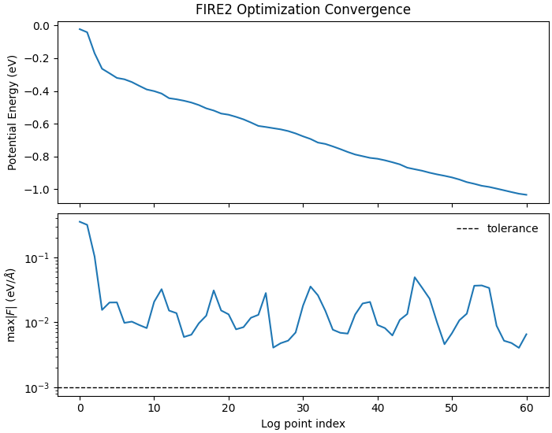
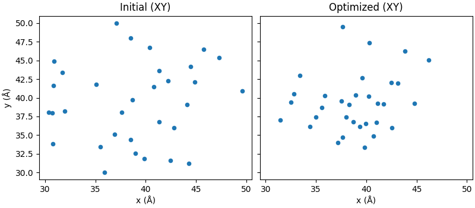

Note
Go to the end to download the full example code.
FIRE2 Geometry Optimization (LJ Cluster)#
This example demonstrates geometry optimization with the FIRE2 optimizer (Guenole et al., 2020) using:
The package LJ implementation (neighbor-list accelerated)
The package FIRE2 kernels (
nvalchemiops.dynamics.optimizers.fire2_step())The shared example utilities in
examples.dynamics._dynamics_utils
Compared to FIRE (06_fire_optimization.py), FIRE2:
Assumes unit mass (no
massesparameter)Requires
batch_idxeven for single-system modeUses fewer per-system state arrays (
alpha,dt,nsteps_inc)Hyperparameters are Python scalars (
delaystep,dtgrow, etc.)
We optimize the same small Lennard-Jones cluster and plot convergence.
from __future__ import annotations
import matplotlib.pyplot as plt
import numpy as np
import torch
import warp as wp
from _dynamics_utils import MDSystem, create_random_cluster
from nvalchemiops.dynamics.optimizers import fire2_step
wp.init()
device = "cuda:0" if wp.is_cuda_available() else "cpu"
print(f"Using device: {device}")
Using device: cuda:0
Create a Lennard-Jones Cluster#
num_atoms = 32
epsilon = 0.0104 # eV (argon-like)
sigma = 3.40 # Å
cutoff = 2.5 * sigma
skin = 0.5
box_L = 80.0 # Å (large to avoid self-interaction across PBC)
cell = np.eye(3, dtype=np.float64) * box_L
initial_positions = create_random_cluster(
num_atoms=num_atoms,
radius=12.0,
min_dist=0.9 * sigma,
center=np.array([0.5 * box_L, 0.5 * box_L, 0.5 * box_L]),
seed=42,
)
system = MDSystem(
positions=initial_positions,
cell=cell,
masses=np.full(num_atoms, 39.948, dtype=np.float64), # amu (argon)
epsilon=epsilon,
sigma=sigma,
cutoff=cutoff,
skin=skin,
switch_width=0.0,
device=device,
dtype=np.float64,
)
Initialized MD system with 32 atoms
Cell: 80.00 x 80.00 x 80.00 Å
Cutoff: 8.50 Å (+ 0.50 Å skin)
LJ: ε = 0.0104 eV, σ = 3.40 Å
Device: cuda:0, dtype: <class 'numpy.float64'>
Units: x [Å], t [fs], E [eV], m [eV·fs²/Ų] (from amu), v [Å/fs]
FIRE2 Optimization Loop#
FIRE2 uses a simpler state than FIRE: just alpha, dt, nsteps_inc
per system, plus 4 scratch buffers. Hyperparameters are Python scalars.
batch_idx is always required (all zeros for single system).
max_steps = 3000
force_tolerance = 1e-3 # eV/Å (max force)
wp_dtype = system.wp_dtype
# Per-system state arrays (shape (1,) for single system)
alpha = wp.array([0.09], dtype=wp_dtype, device=device)
dt = wp.array([0.005], dtype=wp_dtype, device=device)
nsteps_inc = wp.zeros(1, dtype=wp.int32, device=device)
# Scratch buffers (shape (1,) for single system)
vf = wp.zeros(1, dtype=wp_dtype, device=device)
v_sumsq = wp.zeros(1, dtype=wp_dtype, device=device)
f_sumsq = wp.zeros(1, dtype=wp_dtype, device=device)
max_norm = wp.zeros(1, dtype=wp_dtype, device=device)
# batch_idx: all zeros for single system
batch_idx = wp.zeros(num_atoms, dtype=wp.int32, device=device)
# Velocities (FIRE2 uses unit mass, so velocities are just momenta)
velocities = wp.zeros(num_atoms, dtype=system.wp_vec_dtype, device=device)
# History for plotting
energy_hist: list[float] = []
maxf_hist: list[float] = []
dt_hist: list[float] = []
alpha_hist: list[float] = []
print("\n" + "=" * 95)
print("FIRE2 GEOMETRY OPTIMIZATION (LJ cluster)")
print("=" * 95)
print(f" atoms: {num_atoms}, cutoff={cutoff:.2f} Å, box={box_L:.1f} Å")
print(f" max_steps={max_steps}, force_tol={force_tolerance:.2e} eV/Å")
print(" FIRE2 defaults: delaystep=60, dtgrow=1.05, alpha0=0.09, maxstep=0.1")
log_interval = 100
check_interval = 50
for step in range(max_steps):
# Compute forces at current positions
energies = system.compute_forces()
# FIRE2 step: updates positions, velocities, alpha, dt, nsteps_inc in-place
fire2_step(
positions=system.wp_positions,
velocities=velocities,
forces=system.wp_forces,
batch_idx=batch_idx,
alpha=alpha,
dt=dt,
nsteps_inc=nsteps_inc,
vf=vf,
v_sumsq=v_sumsq,
f_sumsq=f_sumsq,
max_norm=max_norm,
)
# Logging / stopping criteria (host read only at intervals)
if step % check_interval == 0 or step == max_steps - 1:
pe = float(energies.numpy().sum())
fmax = float(
torch.linalg.norm(wp.to_torch(system.wp_forces), dim=1).max().item()
)
energy_hist.append(pe)
maxf_hist.append(fmax)
dt_hist.append(float(dt.numpy()[0]))
alpha_hist.append(float(alpha.numpy()[0]))
if step % log_interval == 0 or step == max_steps - 1:
print(
f"step={step:5d} PE={pe:12.6f} eV max|F|={fmax:10.3e} eV/Å "
f"dt={dt_hist[-1]:8.5f} alpha={alpha_hist[-1]:7.4f} "
f"n+={int(nsteps_inc.numpy()[0]):3d}"
)
if fmax < force_tolerance:
print(f"\nConverged at step {step} (max|F|={fmax:.3e} eV/Å).")
break
===============================================================================================
FIRE2 GEOMETRY OPTIMIZATION (LJ cluster)
===============================================================================================
atoms: 32, cutoff=8.50 Å, box=80.0 Å
max_steps=3000, force_tol=1.00e-03 eV/Å
FIRE2 defaults: delaystep=60, dtgrow=1.05, alpha0=0.09, maxstep=0.1
step= 0 PE= -0.022508 eV max|F|= 3.541e-01 eV/Å dt= 0.00500 alpha= 0.0900 n+= 1
step= 100 PE= -0.169683 eV max|F|= 1.031e-01 eV/Å dt= 0.03696 alpha= 0.0484 n+=101
step= 200 PE= -0.291762 eV max|F|= 2.022e-02 eV/Å dt= 0.08000 alpha= 0.0107 n+=201
step= 300 PE= -0.328476 eV max|F|= 9.843e-03 eV/Å dt= 0.06000 alpha= 0.0900 n+= 52
step= 400 PE= -0.368472 eV max|F|= 9.107e-03 eV/Å dt= 0.08000 alpha= 0.0224 n+=152
step= 500 PE= -0.400717 eV max|F|= 2.077e-02 eV/Å dt= 0.08000 alpha= 0.0049 n+=252
step= 600 PE= -0.443818 eV max|F|= 1.520e-02 eV/Å dt= 0.08000 alpha= 0.0011 n+=352
step= 700 PE= -0.459287 eV max|F|= 5.966e-03 eV/Å dt= 0.08000 alpha= 0.0598 n+= 87
step= 800 PE= -0.485679 eV max|F|= 9.677e-03 eV/Å dt= 0.08000 alpha= 0.0132 n+=187
step= 900 PE= -0.519129 eV max|F|= 3.104e-02 eV/Å dt= 0.08000 alpha= 0.0029 n+=287
step= 1000 PE= -0.544707 eV max|F|= 1.331e-02 eV/Å dt= 0.06000 alpha= 0.0900 n+= 39
step= 1100 PE= -0.572975 eV max|F|= 8.447e-03 eV/Å dt= 0.08000 alpha= 0.0273 n+=139
step= 1200 PE= -0.613114 eV max|F|= 1.308e-02 eV/Å dt= 0.08000 alpha= 0.0060 n+=239
step= 1300 PE= -0.626956 eV max|F|= 4.091e-03 eV/Å dt= 0.07293 alpha= 0.0847 n+= 64
step= 1400 PE= -0.644412 eV max|F|= 5.236e-03 eV/Å dt= 0.08000 alpha= 0.0187 n+=164
step= 1500 PE= -0.676661 eV max|F|= 1.813e-02 eV/Å dt= 0.08000 alpha= 0.0041 n+=264
step= 1600 PE= -0.714668 eV max|F|= 2.611e-02 eV/Å dt= 0.08000 alpha= 0.0009 n+=364
step= 1700 PE= -0.738105 eV max|F|= 7.718e-03 eV/Å dt= 0.08000 alpha= 0.0563 n+= 91
step= 1800 PE= -0.772027 eV max|F|= 6.722e-03 eV/Å dt= 0.08000 alpha= 0.0124 n+=191
step= 1900 PE= -0.797784 eV max|F|= 1.953e-02 eV/Å dt= 0.08000 alpha= 0.0027 n+=291
step= 2000 PE= -0.813366 eV max|F|= 9.130e-03 eV/Å dt= 0.06000 alpha= 0.0900 n+= 45
step= 2100 PE= -0.834695 eV max|F|= 6.301e-03 eV/Å dt= 0.08000 alpha= 0.0249 n+=145
step= 2200 PE= -0.867851 eV max|F|= 1.347e-02 eV/Å dt= 0.08000 alpha= 0.0055 n+=245
step= 2300 PE= -0.886634 eV max|F|= 3.405e-02 eV/Å dt= 0.08000 alpha= 0.0012 n+=345
step= 2400 PE= -0.908705 eV max|F|= 9.988e-03 eV/Å dt= 0.06000 alpha= 0.0900 n+= 56
step= 2500 PE= -0.927332 eV max|F|= 6.808e-03 eV/Å dt= 0.08000 alpha= 0.0211 n+=156
step= 2600 PE= -0.955947 eV max|F|= 1.362e-02 eV/Å dt= 0.08000 alpha= 0.0047 n+=256
step= 2700 PE= -0.978268 eV max|F|= 3.703e-02 eV/Å dt= 0.08000 alpha= 0.0010 n+=356
step= 2800 PE= -0.995579 eV max|F|= 8.869e-03 eV/Å dt= 0.06000 alpha= 0.0900 n+= 57
step= 2900 PE= -1.016717 eV max|F|= 4.816e-03 eV/Å dt= 0.08000 alpha= 0.0208 n+=157
step= 2999 PE= -1.033258 eV max|F|= 6.567e-03 eV/Å dt= 0.08000 alpha= 0.0047 n+=256
Plot convergence
steps = np.arange(len(energy_hist))
fig, ax = plt.subplots(2, 1, figsize=(7.0, 5.5), sharex=True, constrained_layout=True)
ax[0].plot(steps, energy_hist, lw=1.5)
ax[0].set_ylabel("Potential Energy (eV)")
ax[0].set_title("FIRE2 Optimization Convergence")
ax[1].semilogy(steps, maxf_hist, lw=1.5)
ax[1].axhline(force_tolerance, color="k", ls="--", lw=1.0, label="tolerance")
ax[1].set_xlabel("Log point index")
ax[1].set_ylabel(r"max$|F|$ (eV/$\AA$)")
ax[1].legend(frameon=False, loc="best")

<matplotlib.legend.Legend object at 0x767809cf2350>
Visualize initial vs final geometry (XY projection)
pos0 = initial_positions
pos1 = wp.to_torch(system.wp_positions).cpu().numpy()
fig2, ax2 = plt.subplots(
1, 2, figsize=(8.0, 3.5), sharex=True, sharey=True, constrained_layout=True
)
ax2[0].scatter(pos0[:, 0], pos0[:, 1], s=20)
ax2[0].set_title("Initial (XY)")
ax2[0].set_xlabel("x (Å)")
ax2[0].set_ylabel("y (Å)")
ax2[1].scatter(pos1[:, 0], pos1[:, 1], s=20)
ax2[1].set_title("Optimized (XY)")
ax2[1].set_xlabel("x (Å)")
plt.show()

Total running time of the script: (0 minutes 2.040 seconds)